Juntos llegamos más lejos
El impacto real ocurre cuando las personas trabajan juntas por un ideal. Conectamos familias, profesionales, instituciones y comunidades para construir redes que generen oportunidades.
Asociación guatemalteca · Desde 2026
Unimos a psicólogas, psiquiatras, familias y personas autistas para acercar evaluaciones diagnósticas comprensivas, acompañar a cada familia y abrir espacios de inclusión en todo el país. Porque ninguna familia debería recorrer este camino sola.
8 fundadores de la salud mental, la educación y el derecho, madres, padres y una mujer autista.
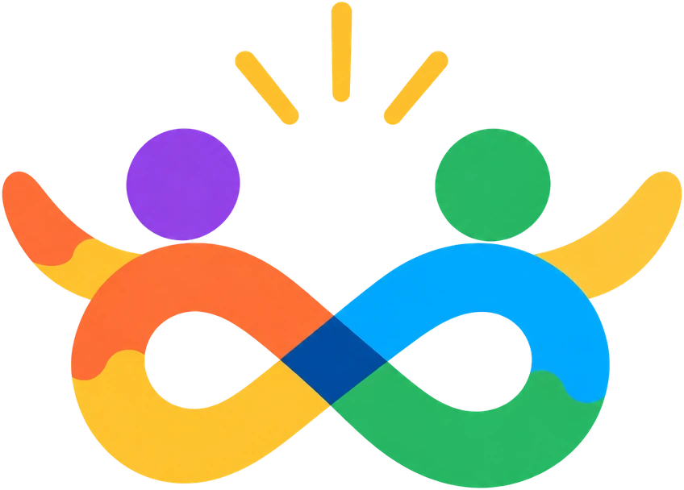
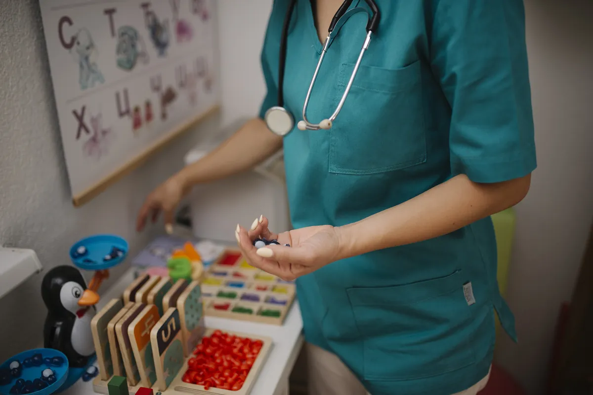
Por qué existimos
1 de cada 127
personas en el mundo es autista. Aun así, la OMS reconoce que
se desconoce la prevalencia del autismo en muchos países de ingreso bajo y mediano
.
Sin una evaluación comprensiva, muchas personas crecen sin que nadie comprenda sus necesidades ni reconozca sus fortalezas.
Nuestra respuesta: RutaRecibir un diagnóstico sin orientación puede ser abrumador. Las familias necesitan información clara y alguien que camine a su lado.
Nuestra respuesta: TravesíaDonde los servicios especializados son limitados, la detección temprana y la inclusión parecen lejanas.
Nuestra respuesta: A³ en movimiento y Conexiones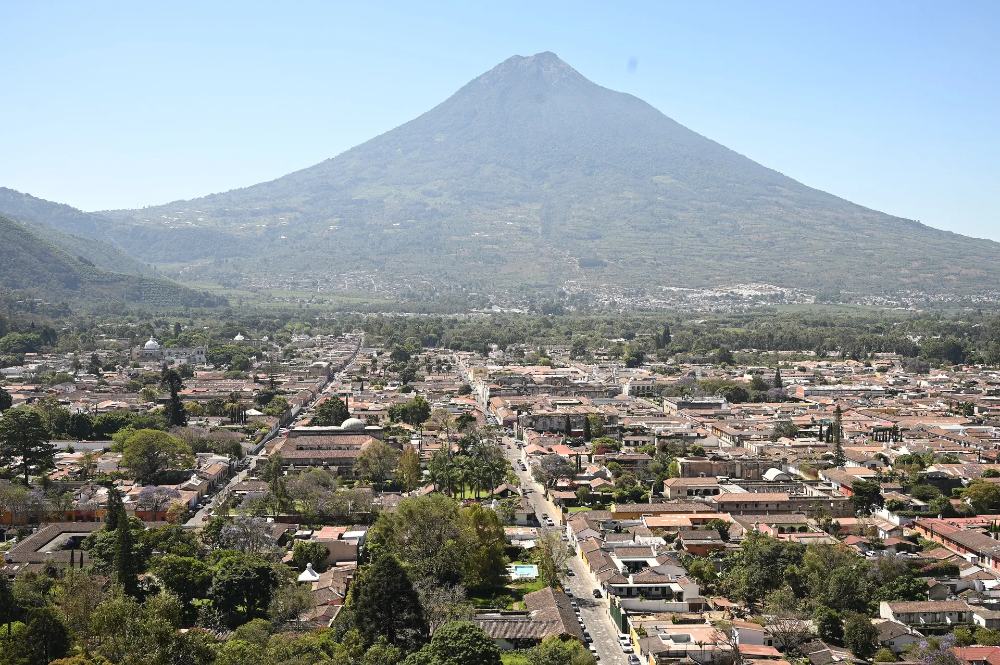
“El diagnóstico no te limita, te expande.”
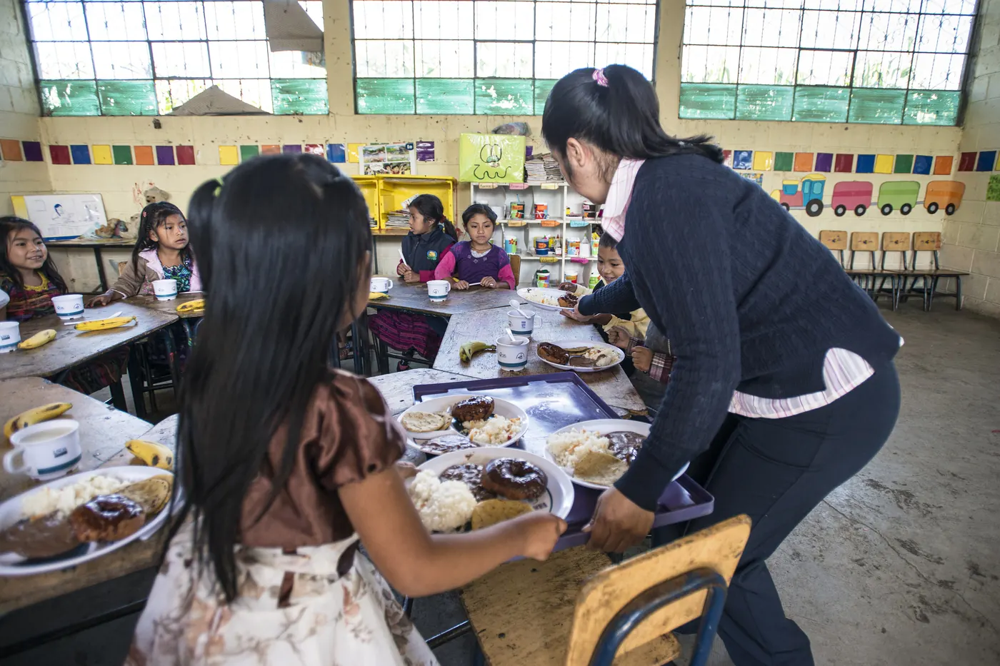
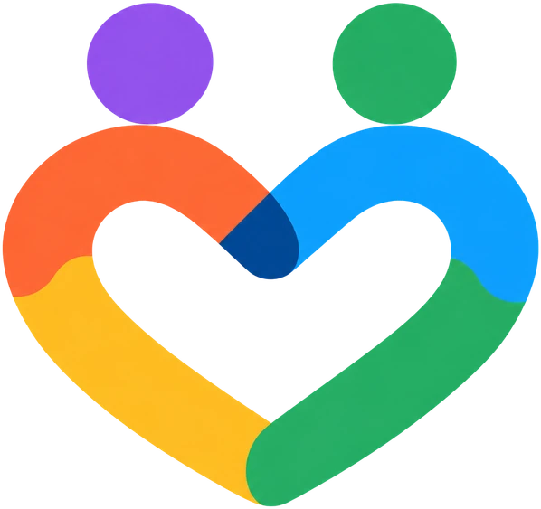
Somos A³
Autismo en Acción Guatemala es una entidad formal integrada por guatemaltecas y guatemaltecos comprometidos con las personas autistas y sus familias. Desde la educación, la salud, el derecho y la propia experiencia de vida, cada integrante aporta lo que sabe y lo que tiene para cumplir una misma misión.
Creemos que cada persona autista posee fortalezas, capacidades y un potencial único que merece ser reconocido y acompañado. Por eso trabajamos para reducir barreras, fortalecer a las familias y promover comunidades más inclusivas.
Lo que nos distingue
El impacto real ocurre cuando las personas trabajan juntas por un ideal. Conectamos familias, profesionales, instituciones y comunidades para construir redes que generen oportunidades.
Ninguna familia debería enfrentar sola los desafíos relacionados con el autismo. Acompañamos con información clara, confiable y basada en evidencia.
Toda persona autista merece oportunidades para desarrollarse desde su neurodivergencia, participar y ser valorada dentro de su comunidad.
Una evaluación diagnóstica comprensiva debe responder a las necesidades de la persona, identificar sus fortalezas y orientar los apoyos que favorezcan su desarrollo.
Nuestros programas
Un recorrido completo: desde la primera sospecha hasta una vida plena en comunidad. Toca cada etapa para conocerla.
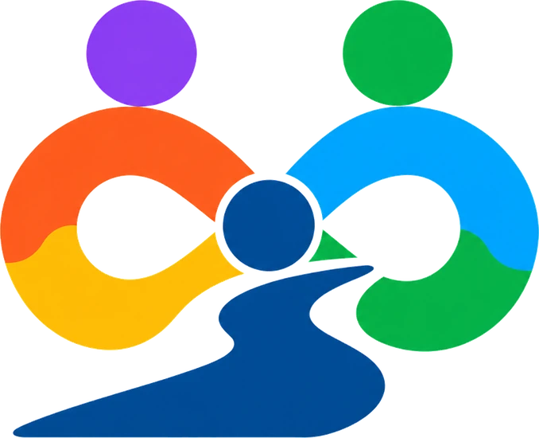
Programa 01 · Ruta A³
Facilitamos el acceso a evaluaciones diagnósticas comprensivas para niños, adolescentes y adultos con sospecha de autismo en Guatemala. Con un enfoque multidisciplinario, buscamos identificar o confirmar el diagnóstico y comprender las fortalezas y necesidades de cada persona, generando información que oriente sus apoyos.
Porque el diagnóstico no te limita, te expande.
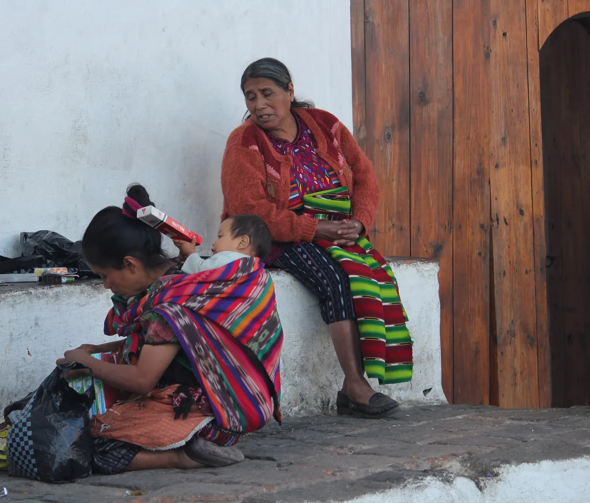
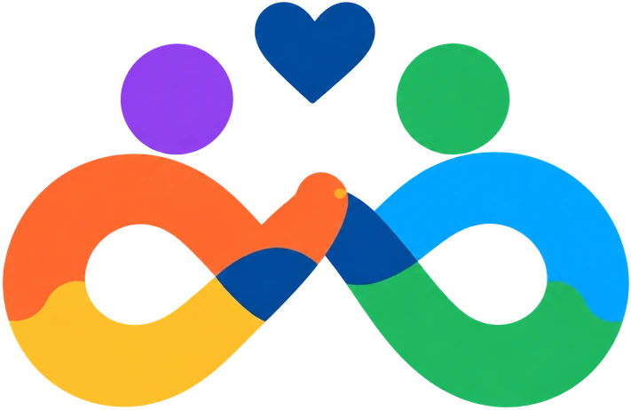
Programa 02 · Travesía A³
Acompañamos a familias guatemaltecas que han recibido recientemente un diagnóstico de autismo o están comenzando a comprenderlo. Orientamos sobre el proceso diagnóstico, las rutas de atención y los apoyos disponibles en Guatemala, fortaleciendo a la familia como principal red de apoyo.
Toda travesía comienza con un paso, pero cobra sentido cuando se recorre en compañía.
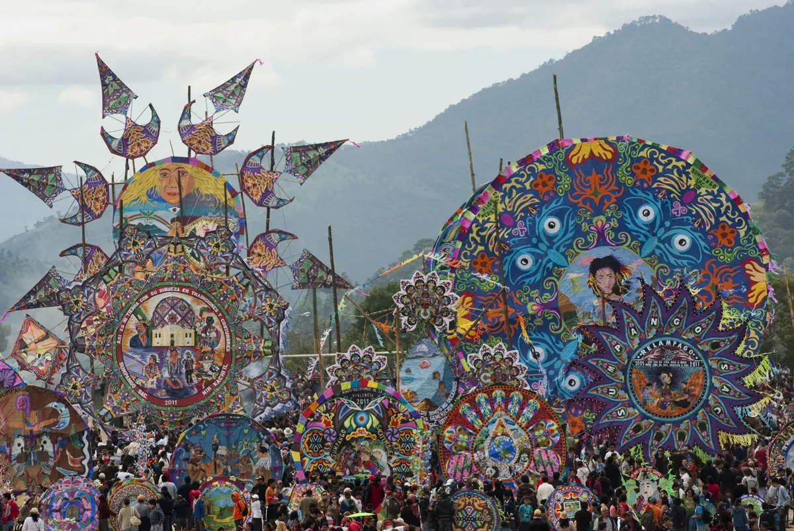
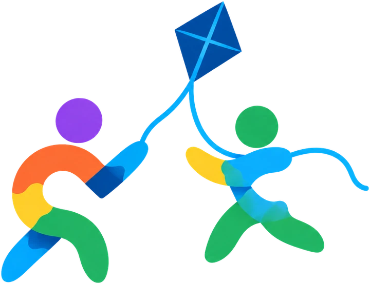
Programa 03 · Conexiones A³
Creamos espacios de encuentro, juego y participación para personas autistas, sus familias y jóvenes comprometidos con la inclusión. A través de una red de Agentes de Cambio A³, promovemos espacios seguros, respetuosos y relaciones significativas.
Porque es aquí donde la inclusión se convierte en acción.
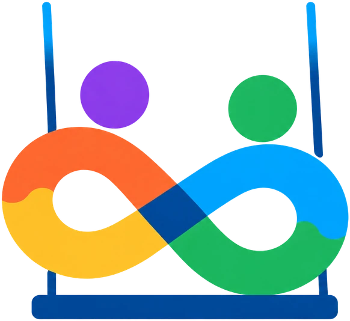
Programa 04 · A³ en movimiento
Llevamos información, capacitación y oportunidades de detección temprana a comunidades de todo Guatemala, especialmente donde el acceso a servicios especializados es limitado. En jornadas comunitarias acercamos psicoeducación, sensibilización, formación y citas de detección para familias, docentes y profesionales.
Cuando la inclusión se pone en movimiento, las fronteras se convierten en caminos.
Nuestra esencia
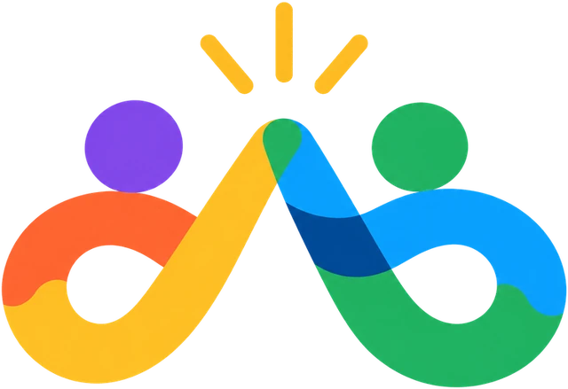
MisiónReducir barreras, fortalecer a las familias y promover comunidades más inclusivas mediante evaluación diagnóstica comprensiva para la detección temprana, acompañamiento familiar, formación profesional e inclusión comunitaria.
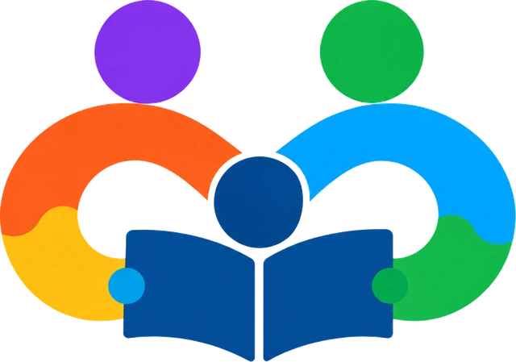
VisiónSer una entidad guatemalteca activa, humana y dinámica, reconocida por ampliar el acceso a evaluaciones diagnósticas comprensivas, fortalecer la comprensión del autismo y generar espacios de oportunidad para las personas autistas y sus familias.
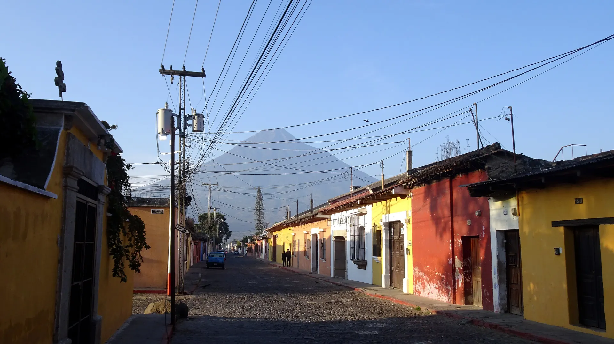
Aspiramos a una Guatemala donde las personas autistas sean valoradas por sus capacidades, participen plenamente y tengan acceso a los apoyos que favorezcan su desarrollo.
Nuestros valores
Acompañamos con respeto, sensibilidad y cercanía, reconociendo experiencias, necesidades y fortalezas.
Entornos donde personas autistas y no autistas participan y se sienten valoradas en igualdad de oportunidades.
Actuamos con responsabilidad, ética y dedicación para un impacto positivo y sostenible en Guatemala.
Construimos redes de apoyo que fortalecen la participación, la colaboración y el bienestar de todos.
Creemos en el poder de la acción colectiva para una sociedad más justa, hoy y para las generaciones futuras.
Historia fundacional
A³ fue fundada en agosto de 2026 por profesionales guatemaltecos de la salud mental y la educación, personas autistas y familiares de personas autistas, unidos por el compromiso de construir una sociedad más justa, accesible e inclusiva.
Psicóloga · Diagnóstico e intervención
Especialista en diagnóstico e intervención en autismo. Promueve espacios de oportunidad para las personas autistas desde sus necesidades como ciudadanos, en el contexto de nuestra realidad social y cultural.
Psicóloga y educadora
Con experiencia en programas dirigidos a personas autistas y sus familias. Impulsa la detección temprana, el acceso a apoyos de calidad y una sociedad más inclusiva.
Psiquiatra de adultos · Padre
Psiquiatra de población adulta y padre de un chico autista, comprometido con la causa y en busca de oportunidades para la población guatemalteca.
Psiquiatra infantil · Madre
Apasionada de la salud mental y madre de un chico dentro del espectro. Promueve el diagnóstico temprano y las intervenciones integrales.
Madre de un adolescente autista
Con un interés genuino por aportar a la comunidad autista guatemalteca desde su experiencia de vida y sus recursos profesionales.
Abogada
Busca generar oportunidades para la población autista desde la legislación, la inclusión y los proyectos educativos.
Psicóloga clínica · Terapeuta sensoriomotora
Más de 25 años desarrollando programas clínicos y educativos para personas autistas, neurodivergentes y sus familias, incluyendo DIRFloortime® (niveles 1–4).
Mujer autista · Activista
Su experiencia como persona autista la lleva a un activismo que empodera a otras mujeres autistas a buscar el diagnóstico y comprender su identidad y necesidades.
Súmate
Hay muchas formas de ser parte de A³. Elige la tuya y escríbenos: te respondemos personalmente.
Lo que tu apoyo hace posible
Una evaluación diagnóstica comprensiva para alguien que hoy no puede costearla.
Orientación y acompañamiento para una familia que acaba de recibir un diagnóstico.
Una jornada de detección temprana en una comunidad con acceso limitado a especialistas.
Tu aporte acerca evaluaciones diagnósticas, acompañamiento a familias y jornadas comunitarias a quienes hoy no tienen acceso.
Quiero donarJóvenes y voluntarios que crean espacios de convivencia, juego y participación inclusiva.
Quiero ser voluntarioEmpresas, colegios, municipalidades e instituciones que quieren llevar la inclusión a su comunidad.
Proponer una alianzaEspecialistas en salud y educación que desean sumar su experiencia a evaluaciones, formación y jornadas.
Quiero colaborarPara familias
No tienen que recorrer este camino solos. Te orientamos sobre la evaluación diagnóstica, las rutas de atención y los apoyos disponibles en Guatemala.
Quiero orientaciónContacto
Escríbenos para orientación, donaciones, voluntariado o alianzas. Cada mensaje lo lee una persona del equipo A³.
infoautismoenacciongt@gmail.comGuatemala · Atención en todo el país